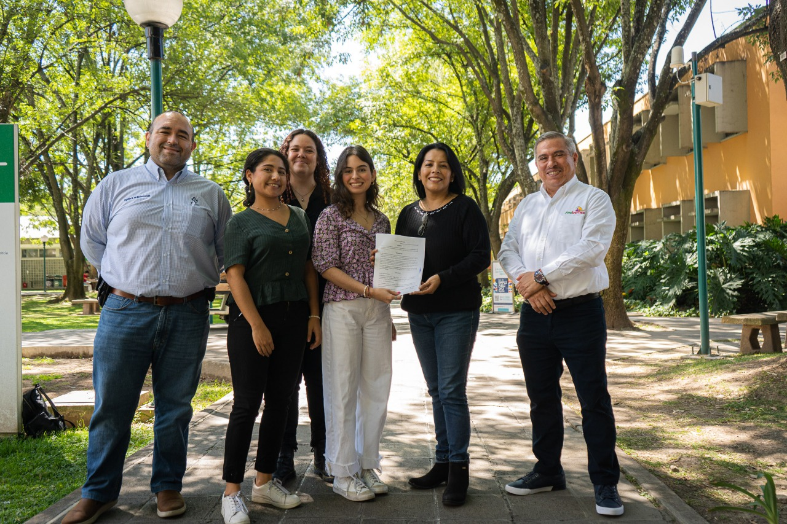

Who is working on?
Participating in the iGEM Global Competition has been a big challenge that was achieved thanks to the
support of multiple people, whom we would like to recognize as follows:
Our Team:
Claudia Denisse Valdés Michel: For her amazing work as the team leader and as responsible for the
business model, especially for helping in the development of the Canvas business model, empathy map and by
doing market research. For participating in the Hackathon, CEGINT's High Impact Entrepreneurship
competition, and validating the information for the Impact Grant. For her work in Labs, finances,
Communication, ANEBERRIES sponsorships management, creating the manual “How to build an iGEM team”,
solution design, trip organization, and collaboration in “Tatei niukieya”, as well as in the design of
infographics.
Sofía Carolina Bárcena Pérez: For her outstanding work as responsible for Labs, especially scientific
research, design of the SynBio solution, MATLAB Codes (modeling), genetic circuit simulation, reports, and
protocols. For her amazing work in finances, and in “Tatei niukieya” book, by being the bridge between the
community and the team. For starting the team and working in the recruitment process.
Aimé Estephania Pérez Martínez: For her work in Human Practices, especially in the problem definition
and validation. For her great work in Communication, helping with the promotion video and being a co-host
in the SYN Sentido podcast. For her amazing work in the “Tatei niukieya” book and being the bridge between
the community, the collaborators, and the team. For her work in the Canvas business model, the empathy
map, market research, and entrepreneurship workshops. For starting the team and working in the recruitment
process.
Monserrat de la Mora Fernández: For her excellent work in Labs, especially in the scientific research,
design of the SynBio solution, the bioprocess simulation, reports and protocols. For her work in the SYN
Sentido Podcast as scriptwriter and co-host. For her work in finances, merch design, sales, and for being
responsible of the Wiki organization, design, and programming.
Juan Pablo Kumamoto Aguilar: For his amazing work in Communication and visual arts, especially as the
promotion video director and producer. For his outstanding work in the SYN Sentido podcast as director,
cameraman and editor. For his work in the social media team, and for his aid in search of sponsorships;
including the contact with ANEBERRIES. For his work on making possible the collaborations with other iGEM
teams.
Jorge Luis Chimal Ayala: For his excellent work in Labs especially building the bioethics and biosafety
manual, scientific research, design of SynBio solution, genetic circuit, reports, protocols, safety forms
and CEGINT competition.
Ana Sophia Márquez García: For her great work in Human Practices especially in the problem definition,
infographics design, validation and human practices research. For her work in Labs in the scientific
research for the SynBio solutions and reports. For her work in Communication and the social media team.
For her work in the SYN Sentido Podcast as scriptwriter and co-host. For her great job in the promotion
video by creating the scripts for the audiovisual content. For her work in applying for the Impact Grant
and in CEGINT’s High Impact Entrepreneurship competition. For being responsible of collaborations with
other iGEM teams and for her work aiding in project management and organization.
Laura Omaet Orozco Figueroa: For her work in Human Practices especially in the validation and solution
design process. For her great work in Communication as responsible, scriptwriter and host of the SYN
Sentido Podcast.
Elke Valeria Islas Semadeni: For her work in Labs, especially in the scientific research and development
of the protocols and reports. For her outstanding work in the mathematical model of the project.
Kevin Martínez Varela: For his amazing work in Labs especially bioethics and biosafety, scientific
research, genetic circuit design and simulation, reports, protocols, and bioprocess simulation.
Javier Damián Peña Nájera: For his outstanding work as project manager, for establishing the groundwork
for team organization, objectives, scheduling, and follow the compliance of activities. For his work in
Human Practices especially in the problem definition, validations, and human practice research. For his
excellent work as co-host and scriptwriter in the SYN Sentido podcast.
We would like to thank:
For trusting and guiding us
Instructors:
M in Sc Sarah Ratkovich Gonzalez: for her unconditional support as our Principal Advisor in Labs,
reviewing the scientific content of the project and helping the team in formulating the solution, being
present in regular meetings with all team members to check the work progress and guiding us through any
issues we encountered. For her work in team presentations and communication, as well as in administrative
tasks. Thank you, Sarah, for always being present, supporting us in our work and in our personal
development. We would not have been able to complete this project without you.
M.A.S Cristóbal Camarena Bernard: as our Secondary Instructor for being our contact with the university,
for helping us with the university procedures, guiding us, helping us in becoming an institutionalized
team, and making the project an official university project.
Advisors:
Dr. Óscar Ariel Rojas Rejón: for his constant support throughout the competition. For being our contact
with the university and helping us promote our team in the school.
More specifically, we would like to thank:
Design League
We appreciate the work done by iGEM ITESO members in iGEM Design League 2021
Roberto Olvera Hernandez: For his work as the first team guide, for establishing this team and for his
work in Human Practices especially in the problem definition, validation, and human research.
Alejandro Becerra Zendejas: For his amazing work in Labs especially in scientific research, designing a
SynBio solution and genetic circuit, the simulation, reports, and protocols. For his excellent work as the
responsible for the Wiki.
Adolfo Arteche Torres: For establishing this team and his amazing work in Labs, especially in scientific
research, designing a SynBio solution and genetic circuit, MATLAB Codes (modeling), simulation, reports,
protocols, validation with Slack (EBRC) and developing the innovation proposal.
Sofía Betzabe Villegas Corona: For her work in Communication, especially in the organization, promotion
and presentation videos, and in social media and Finances.
Julia Verónica Reynaga Manzano: For her amazing work in Labs, especially in scientific research, Design
SynBio solution, reports, and protocols.
Alondra Monserrath Zamora Cortés: For her outstanding work in Project Management, especially in
establishing team organization, team task management, Work Breakdown Structure and the Gantt diagram.
María Fernanda Cárdenas Gallardo: For her great work in Labs, especially in scientific research, Design
SynBio solution and genetic circuit, MATLAB Codes (modeling), simulation, genetic sequence, reports,
protocols, and the innovation proposal.
Saraí Salcedo Castañeda: For her excellent work in Human Practices especially in the problem definition
and validation. For her work in developing the Bioethics Manual, the JOGL Page and Wiki.
Emilio Salvador Castorena Regalado: For his work in Human Practices especially in the problem
definition, validation, human research and in developing the Bioethics manual. For his work in Labs
scientific research, designing a SynBio solution, and validation with Slack (EBRC).
Carolina Arias Corona: For her excellent work in Finance especially in the organization, raffle, and
search of sponsorships. And the continuous help in the mathematical model.
Alejandro Jimenez Orozco: For his amazing work in project management and as a podcast co-host and
scriptwriter.
Alethia Chacón Velázquez: For her great work in Human Practices especially in the problem definition,
validation, interaction, and human research. For her work in Communication in the promotional video,
social media content and definition of team identity.
Wiki
We appreciate the work done by:
Erick Eduardo Gamboa Valle: For the development of the wiki.
Audio visual and illustration support
We appreciate the work done by:
Octavio Díaz as first camera, Héctor Rodríguez as first audio, Isaac Torres as drone driver, and Héctor
Márquez López for their amazing work in the presentation video, successfully documenting the work done by
Mexican farmers.
To farm workers, especially Imelda Romero and Ángel Tejada for explaining and showing us their work.
Edna Ayala Flores for her amazing work in Integral Design, especially for helping us create the iGEM ITESO
logo, color palette and BerryQT design.
Iván Carillo Perezcano for his amazing work illustrating and contributing to “Tatei niukieya”.
Human Practice support
We appreciate the Investigation, validation, and interviews done by:
Aracely Gutiérrez Lomelí, and Alejandra Figueroa Esqueda.
We would like to thank:
Jhovani Gómez Galvez for receiving us at the ranch “Agricola TEMU”
Ángel Tejada for receiving us at your ranch “Agropecuaria ANCON”
Omar Hernández for receiving us at your ranch “San Martín”
For explaining and teaching us their process during multiple validations. To all the farmers (detailed in
Human Practices) that provided us with data and guidance through the validations made for BerryVax.
And
David Gonzalo Ramos García
Emiliano Mejíaz Butista
Antonio Hayuaneme García Mijarez
For the translation Spanish to Wixarika, selection and definition of the indigenous view of concepts used
in “Tatei niukeya”. For helping us write and propose the general idea behind the book.
Labs and investigation support
We appreciate the investigation and protocols support done by:
Saulo Emmanuel Hernández Vega and Sofía Anahí Real Covarrubias.
Dr. Alejandra Barbachano Torres for her suppory and advisory in genetic circuit design.
Business model support
We appreciate the business model design support done by:
Sergio Godínez Manríquez, Diego Mijangos, Maria Paula Martínez Bumas and regulation investigation by Mario
Alfonso Camacho Nolazco.
To Diego Castorena and CEGINT for the mentorship given in entrepreneurship and business model development.
Sponsors
Special thanks to our official sponsor “ANEBERRIES” (Asociación Nacional de Exportadores de Berries) and
all its members, especially Juan José Flores (general director), and Araceli Patricio (accountant) for
providing financial support to our team, promoting research, science, and for the trust placed in our
work.

.png)
Thanks to University Instituto Tecnologico y de Estudios Superiores de Occidente (ITESO) for supporting us
with registration fees of this competition.
Thanks to Twist Bioscience for give us the genetic synthesis by the genetic circuit.
Thanks to GenScript for the finance support.
Principal paper research
Hashem, A., Tabassum, B., & Abd_Allah, E. F. (2019). Bacillus subtilis: A plant-growth promoting
rhizobacterium that also impacts biotic stress. Saudi journal of biological sciences, 26(6), 1291-1297
Chen, Y. L., Lu, W., Chen, Y. H., Xiao, L., & Cai, J. (2007). Cloning, expression and sequence analysis of
chiA, chiB in Bacillus thuringiensis subsp. colmeri 15A3. Wei Sheng wu xue bao= Acta Microbiologica
Sinica, 47(5), 843-848.
Wecke, T., Halang, P., Staroń, A., Dufour, Y. S., Donohue, T. J., & Mascher, T. (2012). Extracytoplasmic
function σ factors of the widely distributed group ECF41 contain a fused regulatory domain.
Microbiologyopen, 1(2), 194-213.